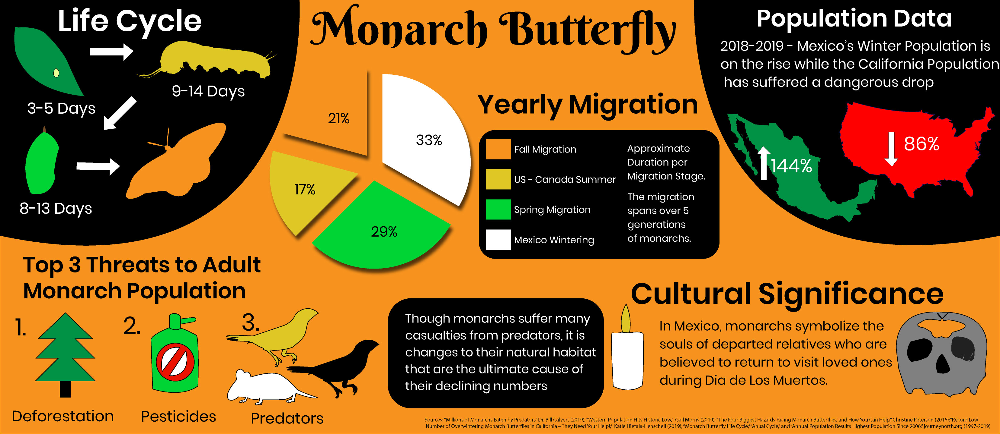
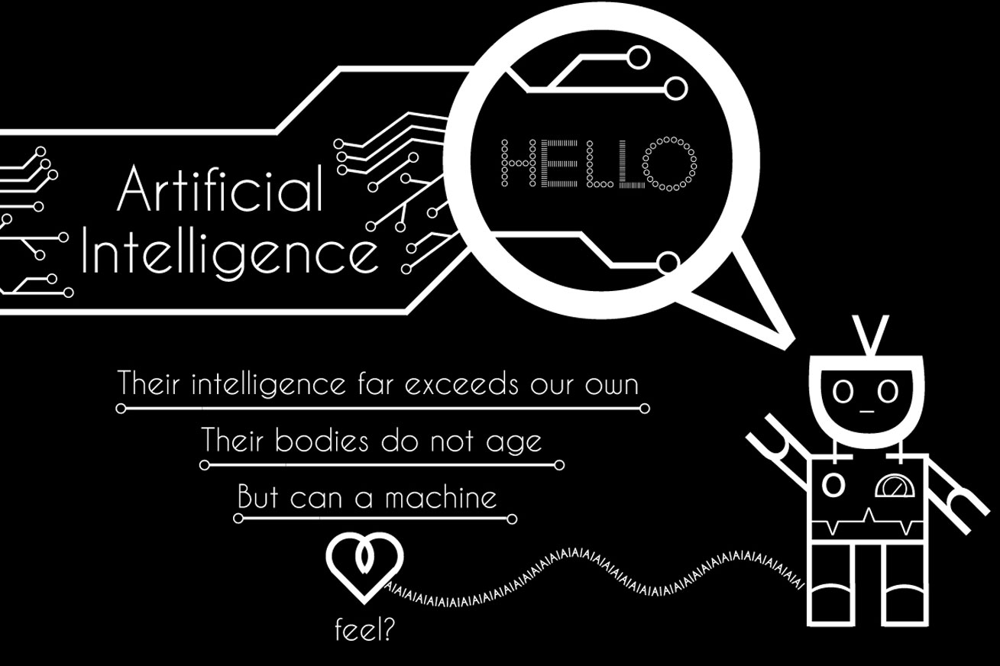

Chocolate Bomb (March 2019)
A short kinetic typography video project. An original script was written and lines were recorded by myself and Anthony Morrissette. All visual assets (except typefaces) and transitions were created using adobe animate. Click Thumbnail to open video.
Monarch Butterfly Poster (Feburary 2019)
An Infographic Poster with details concerning the monarch butterfly. After conducting research, infographics were created to depict this data. Created using Adobe Illustrator.
Logo Designs (September - November 2018)
Multiple logos designed for various purposes. Skeleton Media is part of my own branding that I created. My process included brainstorming concepts, sketching out ideas, receiving feedback, and fine tuning before arriving at the final version. L & G is a logo for a theoretical landscaping company called 'Land and Gentry.' Lastly, Three Sisters is a bakeshop in the Ottawa region and this is a theoretical rebranding of their logo.
Typographical Poster (November 2018)
This project was created using only typography, without any manipulations done to the typeface itself. Created using Adobe Illustrator.